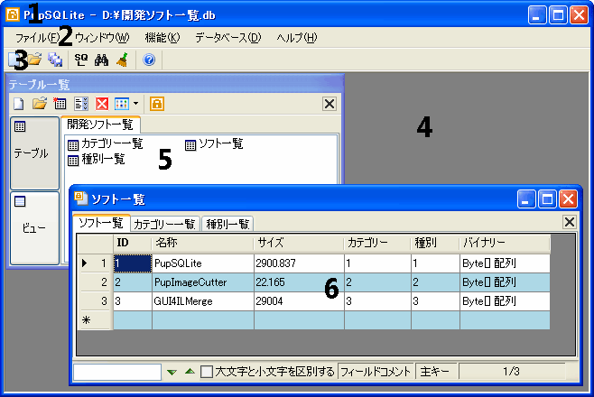

PupSQLiteのメインウィンドウです。メインウィンドウの中には様々なウィンドウが開かれ、 そのウィンドウによって様々な機能を実行することができます。
現在開いているデータベースの名前が表示されます。
データベースを開いたり、新規作成や保存、PupSQLiteの終了などさまざまな操作が可能です。
よく使われる機能をアイコン表示で提供します。
ここに様々なウィンドウが表示され、そのウィンドウに対して操作が可能です。
テーブル、ビューの一覧がデータベースごとに表示されます。
テーブル(ビュー)の内容が表示されます。データ操作ができるウィンドウです。
Copyright(C) 2008-2013 Pup All Rights Reserved.